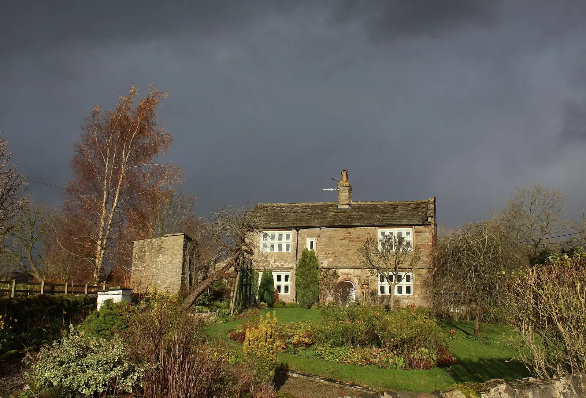

After the storm
Detailed checks after every storm.
Hail and wind damage often can’t be seen from the ground. We inspect closely and record everything.
- Roof surface, flashings, ridge capping, gutters and valleys checked
- Photo records of any storm or hail damage
- Honest advice on repair versus replacement